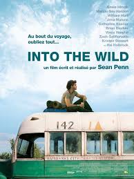
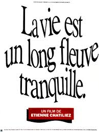

Perrine Meteyer
Freelance Web marketing
Student @Le Wagon
After a Master degree in Marketing and Business Strategy, I decided to learn the code and bild my own business !
See for yourselfMy favorite movies
|  |
Into the wildTout juste diplômé de l'université, Christopher McCandless, 22 ans, est promis à un brillant avenir. Pourtant, tournant le dos à l'existence confortable et sans surprise qui l'attend, le jeune homme décide de prendre la route en laissant tout derrière lui. |
|  |
La vie est un long fleuve tranquilleDans une petite ville du nord de la France, deux familles nombreuses, les Le Quesnoy et les Groseille, d'origines bien différentes, n'auraient jamais du se rencontrer. Mais c'était sans compter sur Josette, l'infirmière devouée du docteur Mavial, amoureuse et lasse d'attendre qu'il quitte sa femme. |

|
Sept viesHanté par un secret, Ben Thomas cherche sa rédemption en transformant radicalement la vie de sept personnes qu'il ne connaît pas. Une fois son plan mis en place, plus rien ne pourra l'arrêter. C'est tout du moins ce qu'il croit. |